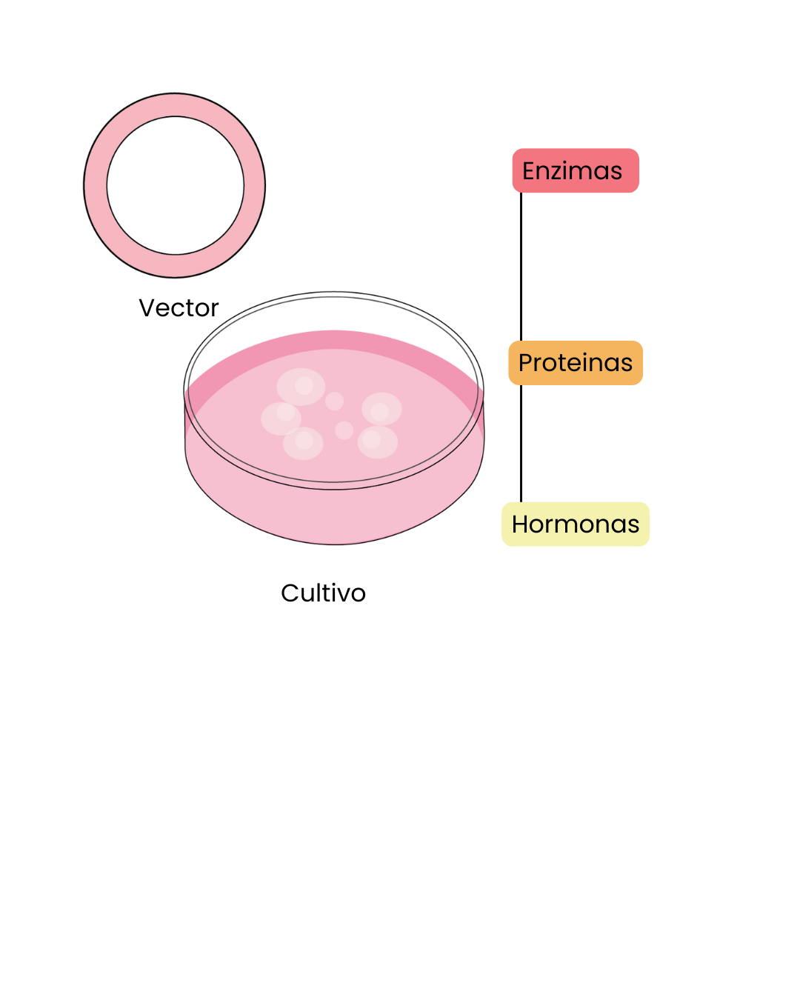

¿Es la clonación la clave para el futuro que conocemos actualmente?
Publicado el 23 de diciembre de 2025
Hola, biólogo ilustrador.
Me alegra verte nuevamente por aquí.
Hoy hablaremos de una temática que suele despertar curiosidad, miedo y fascinación a partes iguales: la clonación. Para comenzar, hagámonos una pregunta clave:
¿Qué es lo primero que se nos viene a la cabeza cuando hablamos de clonación?
Muchas veces pensamos en laboratorios futuristas, copias humanas o experimentos fuera de control. Sin embargo, la realidad es que la clonación es un proceso mucho más cercano, antiguo y natural de lo que solemos imaginar, aunque no está exento de matices científicos y éticos.
¿Qué es la clonación?
La clonación (también llamada clonaje o clonado) consiste en la obtención de un clon, entendido como un conjunto de elementos genéticamente idénticos entre sí y a su precursor.
Estos elementos pueden ser:
- Moléculas
- Células
- Tejidos u órganos
- Organismos pluricelulares completos
En términos simples:
Clonación = amplificación genética
Y algo muy importante: la clonación no es un invento moderno. Es un proceso fisiológico normal. Por ejemplo, las células embrionarias totipotentes que se forman a partir del cigoto mediante mitosis son clónicas. Cada vez que una célula se divide, está generando una copia genética de sí misma.
La clonación, por tanto, siempre ha estado presente en la vida.
Tipos de clonación
1. Clonación molecular
Consiste en la clonación de genes o fragmentos de ADN o ARN.
- Puede realizarse sin intervención de células (clonación acelular)
- Un ejemplo clave es la PCR (reacción en cadena de la polimerasa), utilizada diariamente en microbiología, diagnóstico y biotecnología
Aquí no se crea vida, solo se amplifica información genética.

2. Clonación celular
Se basa en la amplificación de material genético mediante su introducción en células hospedadoras, generalmente usando vectores y tecnología de ADN recombinante.
Gracias a esta clonación se producen:
- Insulina
- Enzimas
- Vacunas
- Proteínas terapéuticas
Este tipo de clonación es fundamental en microbiología aplicada y medicina moderna.

3. Clonación de tejidos y órganos
Aquí entran en juego las células troncales o células madre.
Células madre: el núcleo del debate
Las células madre son células indiferenciadas capaces de:
- Autorrenovarse
- Diferenciarse en distintos tipos celulares
Según su potencial, pueden ser:
- Totipotentes: capaces de formar un organismo completo
- Pluripotentes: capaces de formar casi todos los tejidos
- Multipotentes: restringidas a ciertos linajes celulares
La clonación celular basada en células madre no es artificial, sino parte del desarrollo natural, la regeneración y el mantenimiento de los tejidos de nuestro cuerpo.
Entonces, si la clonación es algo natural…
¿dónde está el problema?
El verdadero conflicto: clonar organismos completos
La problemática surge cuando se intenta clonar organismos pluricelulares complejos, especialmente mamíferos.
Un ejemplo emblemático es la oveja Dolly, el primer mamífero clonado a partir de una célula somática. Aunque fue un hito científico, también evidenció grandes limitaciones:
- Baja eficiencia del proceso
- Fallos en el desarrollo embrionario
- Problemas epigenéticos
- Envejecimiento prematuro
Esto nos muestra que tener el mismo genoma no garantiza un desarrollo normal.

¿Clones idénticos = individuos idénticos?
No.
Dos organismos pueden ser genotípicamente muy similares, pero nunca serán la misma persona.
La identidad no depende solo de los genes, sino también de:
- Epigenética
- Ambiente
- Historia de vida
- Experiencias
Por eso surge un profundo debate ético cuando se plantea clonar:
- Personas
- Familiares
- Mascotas
Un clon comparte genes, no recuerdos, conciencia ni vivencias.
El caso de los lobos y la "resurrección" de especies
En años recientes, la clonación volvió a los titulares por proyectos que buscan "revivir" especies extintas, como ciertos lobos prehistóricos. Sin embargo, es fundamental aclarar algo:
No se ha clonado directamente ningún organismo extinto.
El ADN antiguo recuperado de restos fósiles se encuentra fragmentado, dañado e incompleto, lo que impide una clonación clásica. Lo que hace la ciencia es algo diferente:
- Se recuperan fragmentos de ADN antiguo
- Se secuencian y comparan con especies actuales emparentadas
- Se identifican genes clave
- Se modifican genomas de organismos vivos cercanos evolutivamente
El resultado no es un clon, sino un organismo genéticamente modificado que se parece al extinto.
No se revive una especie:
se reconstruye un fenotipo aproximado usando parientes vivos.

¿Por qué esto es problemático?
Desde la ciencia:
- El genoma reconstruido nunca es completo
- El ambiente original ya no existe
- El desarrollo es impredecible
Desde la ética:
- ¿Dónde vivirían estos organismos?
- ¿Qué rol ecológico cumplirían?
- ¿Quién asume la responsabilidad de su bienestar?
Los organismos no existen aislados: forman parte de ecosistemas que, en muchos casos, ya desaparecieron.
La perspectiva microbiana: el presente silencioso
Paradójicamente, mientras intentamos recrear grandes organismos extintos, la clonación microbiana ha sido una aliada silenciosa del avance científico durante décadas.
En microbiología:
- Se clonan genes todos los días
- Se estudia la evolución molecular
- Se reconstruyen linajes ancestrales
- Se producen medicamentos esenciales
Esto refuerza una idea clave:
Cuanto más simple es el sistema biológico, más controlable y éticamente viable resulta la clonación.
Reflexión final
La clonación no es el futuro: es parte del presente y del pasado de la biología.
El desafío no está en la técnica en sí, sino en cómo, para qué y hasta dónde decidimos usarla.
La ciencia avanza, pero la ética debe avanzar con ella.